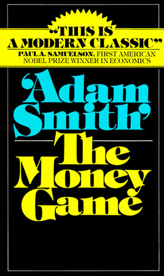

"亚当·斯密"是乔治·古德曼（George J. W. Goodman，1930—2014）的笔名。他毕业于哈佛，又以罗德学者身份读了牛津，当过记者、做过基金公司董事，参与创办了《机构投资者》和《纽约》两本杂志——正是《纽约》杂志的克莱·费尔克，为了让他匿名撰写华尔街专栏，给他安上了这个经济学鼻祖的名字。晚年他主持的电视节目《亚当·斯密的金钱世界》拿过多座艾美奖，巴菲特第一次上电视受访就是在这档节目里。《金钱游戏》1968年出版，正赶上美股"沸腾岁月"（Go-Go Years）的高点，登上畅销榜首位并停留一年多，后来被译成约三十种语言。
这本书不好归类：它一半是1960年代华尔街的现场速写，一半是最早认真谈论金钱心理的作品。古德曼借用凯恩斯的说法，把投资称作一场"游戏"——推动它的不是理性计算，而是贪婪、恐惧，以及人把身份认同押在盈亏上的那份焦虑。他自己的概括是，这是"一本关于形象与现实、身份与焦虑、以及金钱的书"。书里流传最广的一句是："如果你不知道自己是谁，股市会是一个昂贵的自我发现之地。"（If you don't know who you are, this is an expensive place to find out.）他还写道，游戏真正的目的不是钱，而是玩这场游戏本身，而"投资的终极目的是内心的安宁"（The end object of investment is serenity）。书中那些化了名的人物——沉迷投机的"伟大的温菲尔德"、执掌富达的"约翰逊先生"——让这些心理有了具体的面孔；而书里当时最抢眼的那批激进基金经理，多数在随后的熊市里栽了跟头，这个结局本身就替全书的论点作了注。
让这本书流传下来的一个原因，是巴菲特的背书。他在1968年7月11日致合伙人的信里写道："最后，想读一份关于当下金融图景的精彩记述，你该赶紧去买一本'亚当·斯密'写的《金钱游戏》。它满是洞见与绝妙的机智。"（Finally, for a magnificent account of the current financial scene, you should hurry out and get a copy of "The Money Game" by Adam Smith. It is loaded with insights and supreme wit.）首位美国诺贝尔经济学奖得主保罗·萨缪尔森给出的评语"这是一部现代经典"（This is a modern classic）则一直印在封面上。四年后，古德曼在续作《超级金钱》（Supermoney，1972）里，把当时还没什么名气的奥马哈基金经理巴菲特第一次介绍给了大众读者。本书中文版长期以《金钱游戏》为名重印，2024年中国科学技术出版社出了增订版。
书里点名的股票和基金经理如今大多只剩下历史意义，但它并没有过时，因为它写的不是1968年那一轮行情，而是人面对金钱时反复出现的那套反应。此后每一代人都遇到过自己的"沸腾岁月"——从电子股热，到互联网泡沫，再到近些年的种种狂热，剧本相似得惊人。它给读者的不是选股方法，而是一个先问自己的顺序：入场之前，先弄清楚自己为什么来、能承受多少、到底想要什么。这也是它和《客户的游艇在哪里》《股票作手回忆录》一样，被职业投资者反复重读的原因。